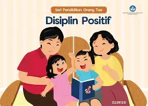

|
CURICULUM VITAE
|
| Nama |
: |
Raissa Fadhilah Akbar |
 |
| Jenis kelamin |
: |
Laki Laki |
| Agama |
: |
Islam |
| Alamat |
: |
Bandung |
| Email |
: |
akbarabaw2@gmail.com |
| Tempat dan Tanggal Lahir |
: |
Bandung 29 Mei 2006 |
| RIWAYAT PENDIDIKAN/SEDANG DITEMPUH |
- SDIT AHSANUL FIKRI
- SMP BAITURRAHMAN
- SMA TELKOM BANDUNG
- UNIVERSITAS PASUNDAN
|
| DESKRIPSI DIRI |
| perkenalkan Saya Raissa Fadhilah Akbar,Saya Mahasiswa Informatika di
Universitas Pasundan saat ini saya berada di semester 1.
Walaupun belum punya pengalaman langsung di bidang Informatika, saya punya kemauan besar
untuk cepat belajar dan menguasai bidang ini.
Saya fokus untuk menyerap semua ilmu di semester awal ini agar pondasi skill saya kuat.
mungkin sebagai gambaran diri saya,saya adalah kanvas kosong yang siap dilukis dengan pengetahuan dan pengalaman |
| PENGALAMAN |
| Saya mulai belajar pemrograman sejak kuliah. Awalnya sulit, tapi setelah sering latihan membuat program sederhana, saya jadi paham logikanya.
Dari situ saya belajar bahwa pemrograman butuh ketelitian dan kesabaran.
Saya Pernah mengikuti beberapa seminar yang berhubungan dengan bidang ini salah satu nya yang cukup terkenal saya mengikuti
seminar GDG(Google Developer Group),
|
| KELEBIHAN DAN KEMAMPUAN |
 Manajemen waktu Manajemen waktu |
 rasa ingin tahu rasa ingin tahu |
disiplin |
 menjaga kebersihan menjaga kebersihan |
| SOSIAL MEDIA DAN KONTAK |
|
|